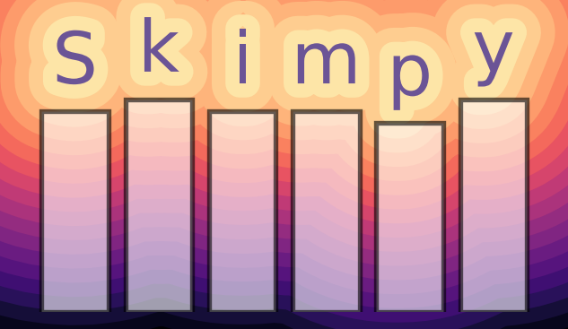

A light weight tool for creating summary statistics from dataframes.

skimpy is a light weight tool that provides summary statistics about variables in pandas or Polars data frames within the console or your interactive Python window.
Think of it as a super-charged version of pandas’ df.describe().
Quickstart
skim a pandas dataframe and produce summary statistics within the console using:
from skimpy import skimskim(df)
where df is a dataframe. Alternatively, use skim_polars() on Polars dataframes.
If you need to a dataset to try skimpy out on, you can use the built-in test Pandas data frame:
from skimpy import skim, generate_test_datadf = generate_test_data()skim(df)
It is recommended that you set your datatypes before using skimpy (for example converting any text columns to pandas string datatype), as this will produce richer statistical summaries. However, the skim() function will try and guess what the datatypes of your columns are.
Requirements
You can find a full list of requirements in the pyproject.toml file.
You can try this package out right now in your browser using this Google Colab notebook (requires a Google account). Note that the Google Colab notebook uses the latest package released on PyPI (rather than the development release).
Installation
You can install the latest release of skimpy via pip from PyPI:
skimpy was inspired by the R package skimr and by exploratory Python packages including ydata_profiling and dataprep, from which the clean_columns function comes.
This package would not have been possible without the Rich package.
The package is built with poetry, while the documentation is built with Quarto and Quartodoc (a Python package). Tests are run with nox.
Using skimpy in your paper? Let us know by raising an issue beginning with “citation” and we’ll add it to this page.